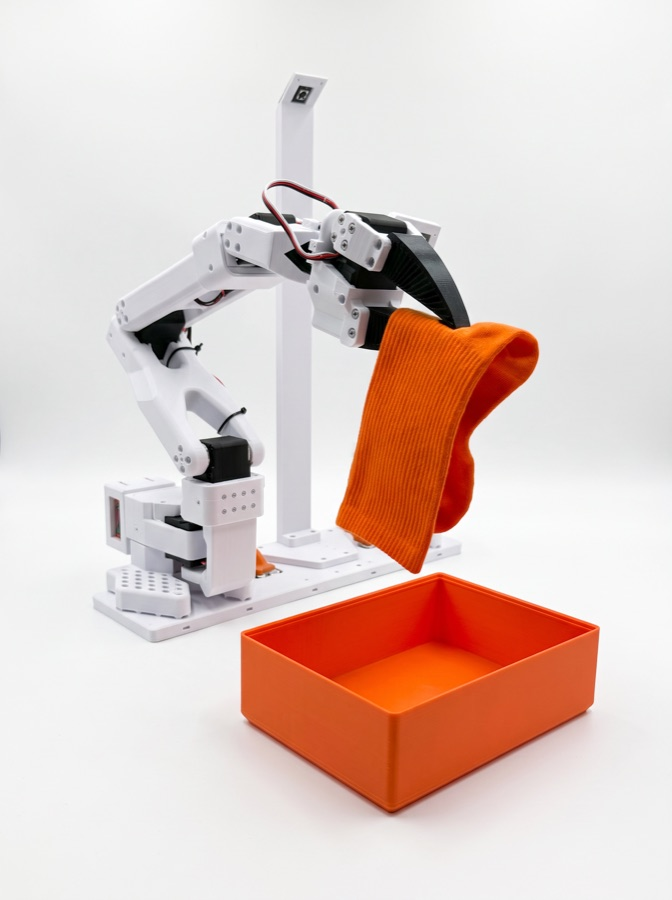
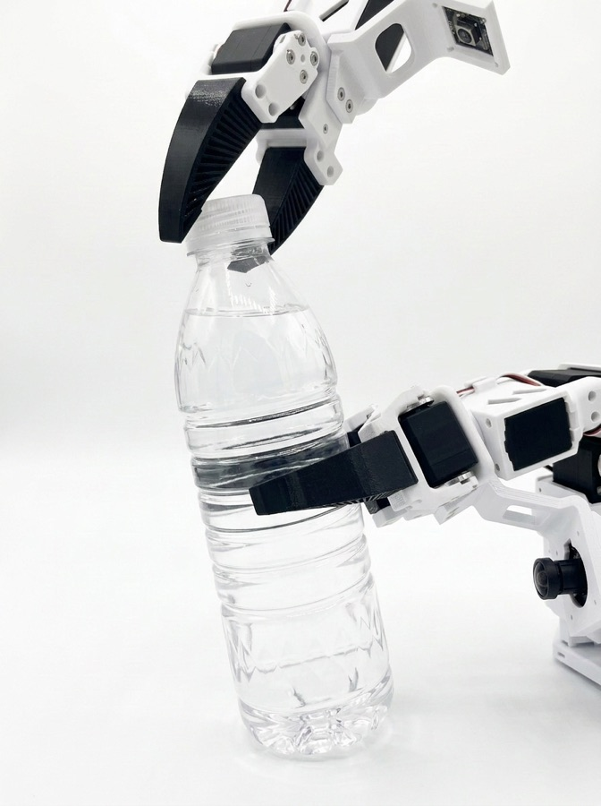
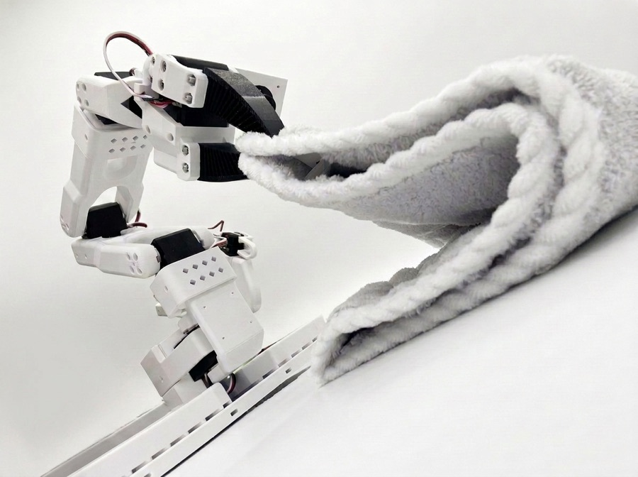
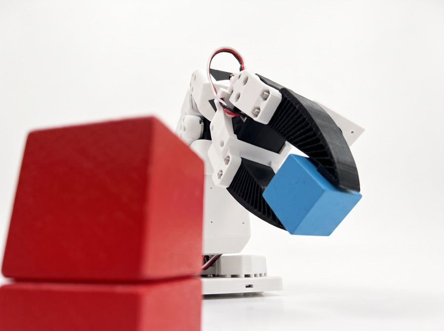

Get the arms ready faster.
Run guided automatic calibration for single or bimanual robots, save named calibrations, and reuse them across skills.
MakerMods Lab turns the SO-101 workflow into a skills workspace. Record your own dataset or start from someone else's, train locally or in the cloud, then run the policy on your robot.
These are the practical things already in MakerMods Lab today: less setup friction, clearer data, and more ways to build on work that already exists.
Run guided automatic calibration for single or bimanual robots, save named calibrations, and reuse them across skills.
Open a dataset, replay synchronized camera views, and inspect the joint-position chart against the same playhead.
Merge compatible LeRobot datasets without dropping into a script, then keep the combined result in your library.
Run training on your own machine or choose cloud compute, with live loss and learning-rate charts in the same workspace.
Import community datasets and policies from Hugging Face, then fine-tune a policy on your own demonstrations.
Choose a checkpoint, map the cameras, run the policy, and move straight back into collecting or training when it needs more work.
Bring in a shared dataset or policy, run it on a compatible setup, or fine-tune it with your own demonstrations. MakerMods Lab is growing into the place where robot skills are found, improved, and passed on.

Available now · ACT policy

In training at MakerMods Lab

In training at MakerMods Lab

In training at MakerMods Lab
These are the next workflows we are building toward. They are not part of the current release yet.
Run a policy, step in when it drifts, and save those corrections as better training data for the next round.
Keep the robot where it is while policy compute runs elsewhere, with the session controlled through MakerMods Lab.
Teleoperate and manage an OpenBooth from somewhere else, so data collection does not require standing beside the rig.
MakerMods Lab requires Python 3.12 or newer and uv. Install directly from GitHub, connect your SO-101, and launch the local interface.
$ uv tool install "git+https://github.com/makermods-robotics/makermodslab"
$ makermodslab
# UI + API on localhost:8000